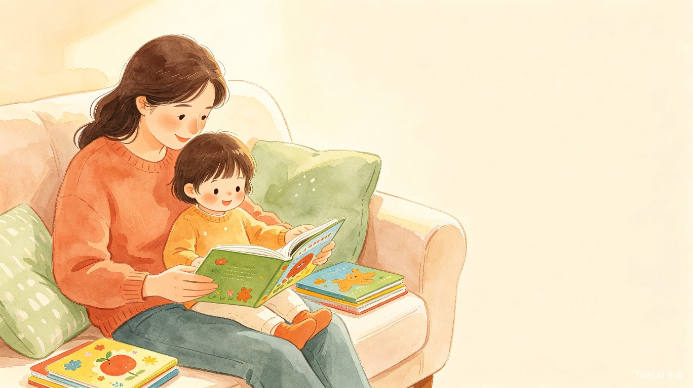

童书伴读
3-6岁亲子阅读绘本推荐与成长记录系统 —— AI 越用越懂你的孩子
作品信息
赛道选择
学习工作 / 造个新解法
作品类型
实用工具 + 创意互动
技术基础
零基础，纯 TRAE 开发
一句话介绍
AI 越用越懂你的孩子 —— 基于阅读记录自动构建用户画像，结合《3-6 岁儿童学习与发展指南》，智能推荐最适合的绘本，让亲子阅读既有兴趣又有成长。
我要解决什么问题？
作为 3-6 岁孩子的家长，我在亲子阅读中经常遇到这些困扰：
❗ 不知道选什么书
书店里绘本成千上万，哪些适合我家 4 岁娃？买了几十本，孩子不爱看，钱花了效果差。
❗ 读了就忘，没有积累
今天读了这本，明天读了那本，读完了就过去了，不知道孩子到底喜欢什么、进步了多少。
❗ 缺少共读方法
拿到绘本不知道怎么和孩子互动，读成了"照本宣科"，孩子觉得无聊。
童书伴读 就是来解决这三个痛点的：用 AI 做精准推荐，用记录做成长追踪，用方法指导提升共读质量。
核心功能规划
功能一：AI 绘本推荐引擎
核心亮点：推荐不是一次性的问卷，而是一个随着使用不断进化的智能系统。
1. 用户画像：AI 自动构建并持续更新
首次使用时，家长只需填写最基础的信息：
| 初始输入 | 说明 |
|---|---|
| 孩子昵称与年龄 | 3-4岁 / 4-5岁 / 5-6岁（对应《指南》三个年龄段） |
| 性格偏好标签 | 可多选：动物、交通工具、公主、恐龙、太空、科普、节日、自然等 |
之后，AI 根据家长的阅读记录自动丰富用户画像，无需家长手动维护：
- 兴趣偏好：从阅读记录中识别孩子反复选择的主题（如连续 5 本都选了恐龙类，AI 自动标记"恐龙深度爱好者"）
- 阅读水平：根据已读书目的文字量和复杂度自动评估
- 薄弱能力识别：AI 分析阅读记录中的"孩子反应"和"家长备注"，识别孩子在哪些发展领域需要加强
2. 推荐逻辑：三维智能匹配
每次推荐时，AI 综合三个维度生成结果：
维度一：兴趣匹配（投其所好）
- 基于用户画像中的性格偏好，优先推荐孩子喜欢的主题
- 在熟悉主题中逐步引入相关新主题（如：喜欢恐龙 → 推荐古生物/地球科学 → 拓展到太空探索）
维度二：能力补强（缺什么补什么）
对照《3-6 岁儿童学习与发展指南》五大领域，识别孩子当前薄弱的发展维度，针对性推荐：
| 薄弱能力 | 推荐方向 | 绘本举例 |
|---|---|---|
| 情绪认知 | 识别和表达情绪的绘本 | 《我的情绪小怪兽》《生气汤》 |
| 语言表达 | 词汇丰富、句式重复的绘本 | 《好饿的毛毛虫》《棕色的熊》 |
| 社交习惯 | 分享、合作、解决冲突的绘本 | 《彩虹鱼》《大卫不可以》 |
| 生活自理 | 刷牙、吃饭、穿衣等习惯绘本 | 《鳄鱼怕怕牙医怕怕》 |
| 科学探究 | 自然观察、数概念、因果关系 | 《小种子》《首先有一个苹果》 |
维度三：适龄发展（符合成长规律）
- 严格对照《指南》中各年龄段的发展目标和合理期望
- 确保推荐内容不超过孩子当前认知水平，避免"拔苗助长"
- 同时适当提供"跳一跳够得着"的挑战性内容，促进发展
3. 推荐输出
每本推荐绘本包含：
- 绘本信息：书名、作者、适读年龄、主题标签
- 推荐理由：结合用户画像的个性化说明
- 能力培养标注：标注本书主要锻炼的能力维度（如"语言表达 ★★★ / 情绪认知 ★★"）
- 亲子共读小贴士：针对这本书的互动建议
功能二：亲子阅读记录本 —— 3 秒快速录入
核心痛点：家长不是不想记录，而是记录太麻烦，坚持不下去。
童书伴读提供 3 种快速录入方式，让记录变成一件"顺手就能做"的事：
🎤 方式一：语音录入（最友好，推荐首选）
家长口述一句话，例如：
"今天读《好饿的毛毛虫》，宝宝很喜欢，反复看了 3 遍，还指着蝴蝶页问了很多问题"
AI 自动解析并填充记录字段：
| 自动提取字段 | 解析结果示例 |
|---|---|
| 绘本名称 | 《好饿的毛毛虫》 |
| 阅读日期 | 今天（自动） |
| 阅读时长 | 约 15 分钟（根据"反复看了 3 遍"估算） |
| 孩子情绪反馈 | 很喜欢、主动提问 |
| 亲子互动亮点 | 孩子指着蝴蝶页提问，表现出强烈好奇心 |
✍ 方式二：文字快速打卡（极简模式）
预设模板，仅需填写 2 项：
| 必填项 | 操作 |
|---|---|
| 书名 | 输入书名首字自动联想匹配（从推荐库中检索） |
| 星级评价 | 1-5 星快速点击 |
可选补充：一句话备注、孩子反应标签（很喜欢 / 主动提问 / 要求再读 / 读到一半分心 / 不太感兴趣）
设计原则：30 秒内完成一条记录，降低心理门槛。
📷 方式三：拍照识别绘本封面（最智能）
对准绘本封面拍照，AI 自动识别书名、作者、出版社，自动匹配推荐库中的绘本信息，一键确认后填充到记录中。
记录自动存档字段
| 字段 | 来源 |
|---|---|
| 阅读日期 | 自动（语音/拍照取当前时间，手动打卡用户确认） |
| 绘本名称 | 自动识别或用户输入 |
| 阅读时长 | 语音估算 / 用户手动补充 / 默认 10 分钟 |
| 孩子情绪反馈 | AI 从语音/文字中提取，或用户选择标签 |
| 亲子互动亮点 | AI 从语音中提取关键描述，或用户手动输入 |
| 能力维度标签 | 根据绘本主题自动标注（如"语言表达"、"情绪认知"） |
记录的价值：这些记录不只是"存档"，更是功能一用户画像的数据来源 —— 读得越多，AI 越懂你的孩子。
功能三：成长可视化报告
AI 定期生成阶段性阅读报告：
- 阅读量统计：本月读了多少本、累计时长
- 兴趣偏好分析：孩子最爱哪些主题
- AI 阅读建议："这个月宝贝最爱的主题是恐龙，建议接下来尝试太空探索类绘本拓展视野"
次要功能规划（MVP 后续迭代）
以下功能不在初赛 Demo 中开发，作为产品长期规划：
🏆 功能四：积分与勋章系统
- 阅读积分：每记录一本阅读获得积分，连续打卡有额外奖励
- 成就勋章："初读者"、"坚持之星"（连续 7 天打卡）、"博览群书"（累计 50 本）、"情绪小导师"、"科普小达人"等
💬 功能五：分享功能
- 将阅读报告生成精美海报，支持分享到微信和朋友圈
- 分享内容包含：本月阅读数量、孩子兴趣雷达图、AI 成长寄语
为什么用 TRAE 做？
零基础可行
整个产品是一个单页 Web 应用，用 TRAE 描述需求即可生成，不需要写代码
AI 能力是核心
推荐引擎、语音解析、封面识别都依赖 AI，TRAE 内置能力可直接调用
快速迭代
从创意到可体验 Demo 预计一周内完成，符合初赛时间节奏
目标用户
3-6 岁孩子的父母，尤其是：
- 刚开始亲子阅读、不知道怎么选书的新手爸妈
- 想记录孩子阅读成长、但嫌麻烦坚持不下去的家长
- 希望提升共读质量、不只是"念字"的父母
初赛 Demo 规划（7月15日前）
✅ 最小可行版本（MVP）必做
- 用户填写孩子基础信息（昵称、年龄、兴趣标签）
- AI 返回个性化绘本推荐列表（含推荐理由、能力标注、共读贴士）
- 阅读记录快速录入（至少支持文字快速打卡，语音录入为加分项）
- 查看阅读统计（已读数量、本月阅读量、兴趣偏好）
❌ 明确不做的功能（复赛再考虑）
- 拍照识别绘本封面（技术复杂度较高，MVP 阶段用书名搜索替代）
- 积分勋章系统
- 微信分享功能
参赛宣言
作为一个零基础的父母，我想用 TRAE 做一个真正能帮助自己和万千家长的工具。AI 让创造没有门槛，而好的教育工具，应该让每个家庭都能轻松获得。
标签
以上是我的创意提案，期待用 TRAE 把这个想法变成真正可用的产品！